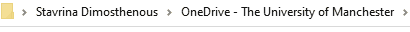
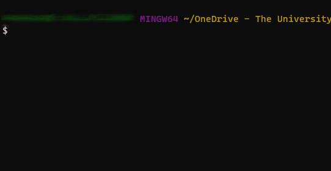

The tree function
Contents
The tree function#
Part of good research data management (RDM) practice is keeping track of your folder and file hierarchies.
The tree function is excellent for producing a hierarchical list of your file structure.
In our examples, we will produce a text file, .txt, that looks something like the one below:
+---Folder 1
+---Folder 2
| \---Folder 2-1
| +---Folder 2-1-1
| \---Folder 2-1-2
| +---Folder 2-1-2-1
| +---Folder 2-1-2-2
The tree function is usually found pre-installed on command line interfaces (CLI) in all 3 popular operating systems.
You can navigate to the section related to your operating system:
Windows Command Line#
The tree command installed on the Windows Command Line (cmd) has two basic functionalities:
List folders#
Navigate to a folder and type the following into the search bar:
You can copy this line directly into the File Explorer search bar:
cmd /c tree /a > output.txt
Note
The /a is important for printing ‘text’ characters.
This command will list all the subfolders in your chosen directory.
The content of the filename, output.txt will look something like this:
| filename0.ext
|
+---Folder 1
| filename0.ext
| filename1.ext
| filename2.ext
|
+---Folder 2
| | filename0.ext
| | filename1.ext
| |
| +---Folder 2-1
| | filename0.ext
| |
| +---Folder 2-2
| | filename0.ext
| | filename1.ext
| |
| \---Folder 2-3
| filename0.ext
|
|
\---Folder 3
filename0.ext
filename1.ext
List folders and files#
You can copy this line directly into the File Explorer search bar:
cmd /c tree /a /f > output.txt
Note
The addition of /f shows us the files in the folders
Listing files in a specific folder#
If you want to list the files in a subfolder of the folder you are currently in, then specifying the subdirectory in your command will do that:
cmd /c tree /a /f "subfolder name" > output.txt
Warning
If you have spaces in your folder name you need to wrap the name in quotation marks, as in the example above.
Using the Windows command line#
If you are comfortable with using the Windows command line you can navigate to a folder in windows command line and use these commands:
tree /a > out.txt
tree /a /f > out.txt
tree /a /f "subfolder name" > out.txt
Terminal#
In this example we will be using the Git Bash terminal for Windows but the commands are generalisable to most shell terminals.
If you need to install the Git Bash terminal for Windows you can follow the steps we outline here.
tree commands on Git Bash#
The tree command we will be installing on Git Bash has a more extensive options list compared to the native tree command on Windows.
From this point we will be referring to the Git Bash terminal as the ‘terminal’ application as the tree commands we’ll show are generalisable to terminal applications with tree installed on macOS and Linux distributions.
You can find the online manual page here or by running the below command in your terminal application:
tree --help
How to install tree in Git Bash terminal#
Here’s a step-by-step guide on how to add tree to the Git Bash terminal
Download
tree‘Binaries’ from this website https://gnuwin32.sourceforge.net/packages/tree.htm 1Unzip
Navigate to the ‘bin’ subfolder of the extracted folder
Copy the tree.exe file into your
C:\Program Files\Git\usr\binfolderCheck that tree works in your Git Bash terminal window by trying to bring up the help menu, using the following command:
tree --help
- 1
Note that the package is not maintained anymore but will work well, nonetheless. If you’re savvy with Git Bash on Windows you can install the latest version from source, you can find it here - http://mama.indstate.edu/users/ice/tree/